Inhalt Index DeskTop Bronstein

 Integraltransformationen Laplace-Transformation Lösung von Differentialgleichungen mit Hilfe der Laplace-Transformation Partielle Differentialgleichungen
Integraltransformationen Laplace-Transformation Lösung von Differentialgleichungen mit Hilfe der Laplace-Transformation Partielle Differentialgleichungen


| 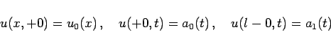 | (15.59b) |
gegeben. Die Zeitkoordinate wurde durch die Substitution y = at ersetzt. Wie die dreidimensionale Wärmeleitungsgleichung, so ist auch (15.59a) vom parabolischen Typ.
| 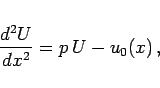 | (15.60a) |
die Randbedingungen sind
| 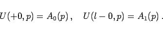 | (15.60b) |
Die Lösung der Bildgleichung lautet dann
| 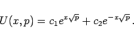 | (15.60c) |
Es ist von Vorteil, zunächst zwei Partikulärlösungen U1 und U2 mit den Eigenschaften
| 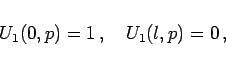 | (15.61a) |
| 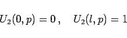 | (15.61b) |
herzustellen, d.h.
| 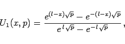 | (15.61c) |
| 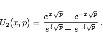 | (15.61d) |
Die gesuchte Lösung der Bildgleichung hat dann die Form
| 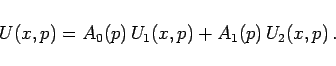 | (15.62) |
| 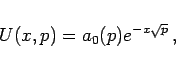 | (15.63a) |
| 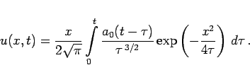 | (15.63b) |